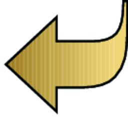

![\includegraphics[height=2cm]{lightbulb}](img2.jpg) |
Press »CTRL+SPACE« to get content assist in the Properties View for certain parameters. |
|
Reference names may only consist of letters, numbers and underscores. You cannot use spaces in reference names. |
 reference symbol
|
It helps to choose names that are meaningful so that you know what sort of data to enter later. Instead of =TEXT, you could use =CATEGORY_NAME, for example. |
|
You can enter data for it now if you want to - this is essentially like having default data. They appear when you reuse the Test Case , but you can overwrite them 3.12.13. |